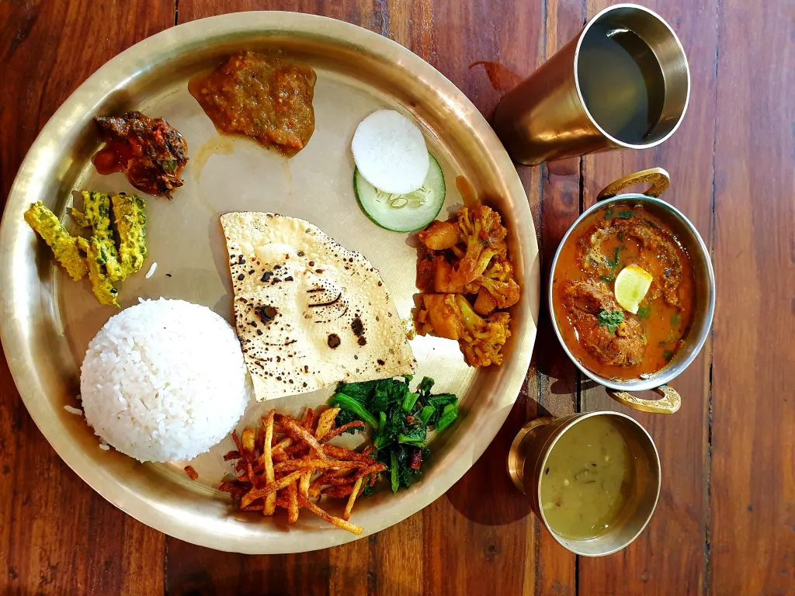
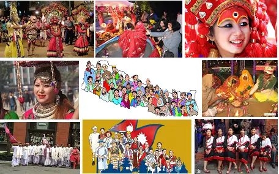
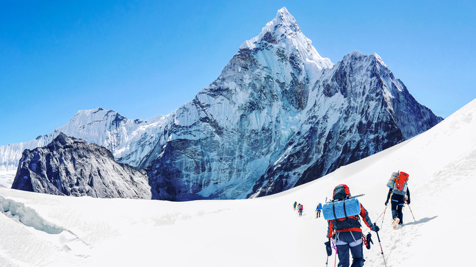
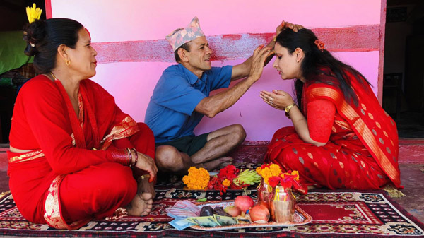
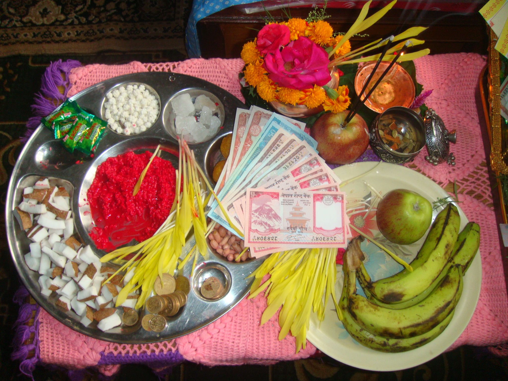
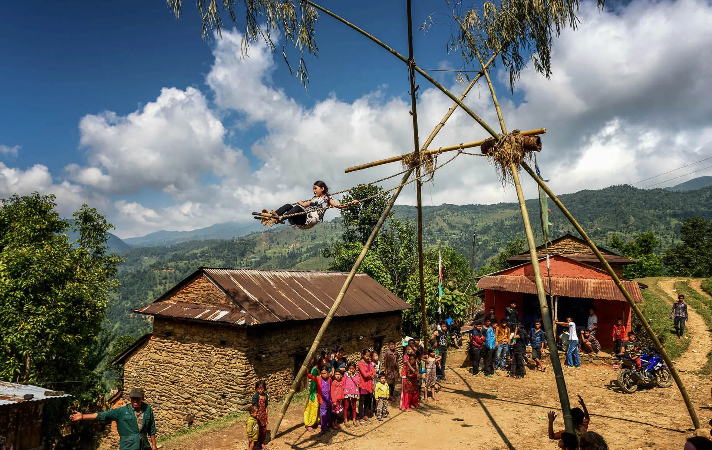
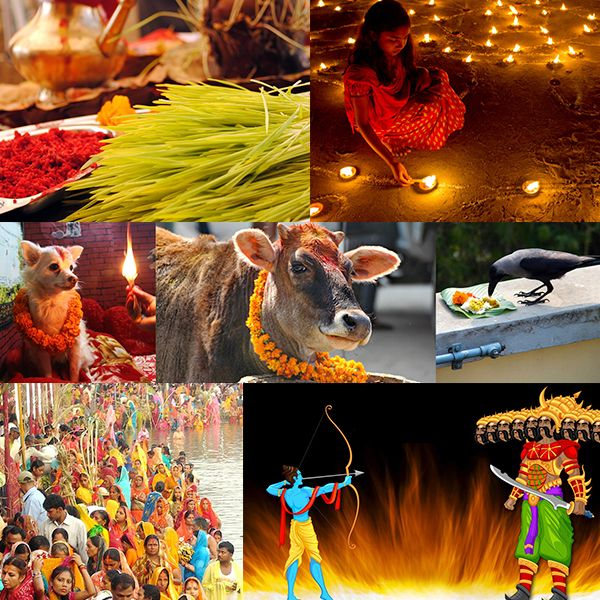
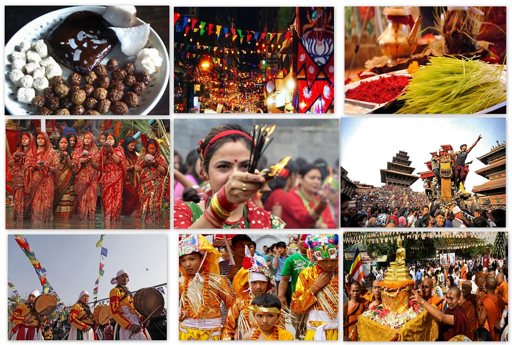
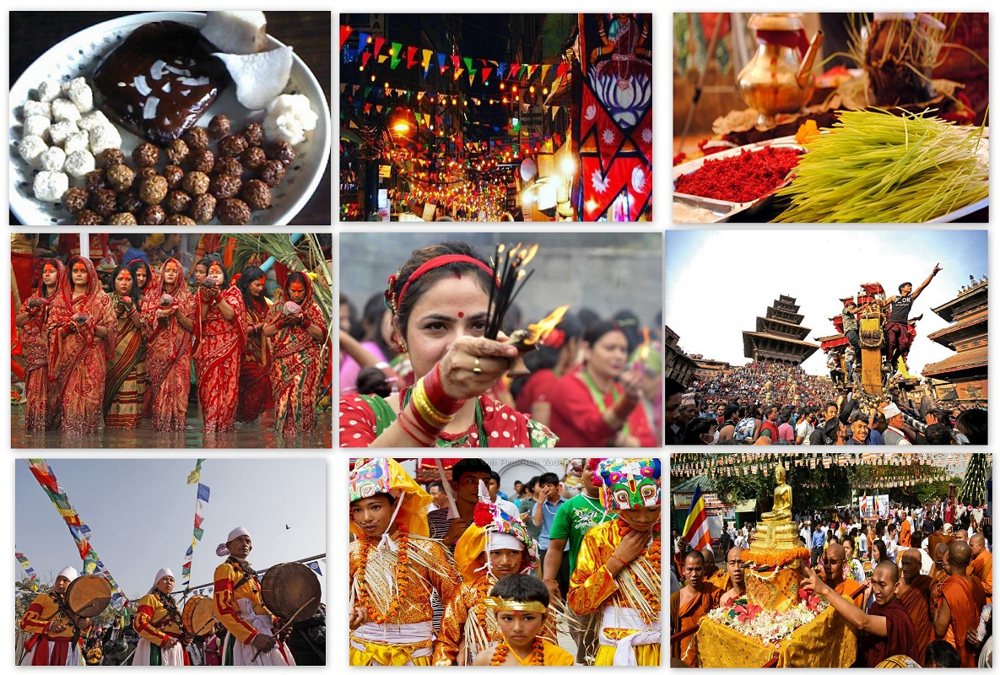

My Country Nepal
The name of My country is Nepal. It is located in South Asia. China is to the north of Nepal and
India is to the other three directions. Kathmandu is the Capital city of Nepal.
Nepal can be devided into three physical divisions. They are the Himalayan region,
the Hillyresin and tarai region with the total area of 1,47,516 square kilo meters.
Nepal is in the Temperature zone, that is to say, the climate is hot in the summer and cold in the winter . But it is very cold in the north, mild in the middle and hot in the south. It rain a lot in monsoon season but winter is cold and dry.Rice, wheat, maize, fruits and vegetables are grown here.
Most of the people in Nepal are the Hindis. So it was called a Hindu Kingdom.
It has been declared as a Secular republic. There are Bhrahimns, Chhetries, Newar,
Gurugs,Tharus, Magars etc. Who live here We have racial and religious harmony. About 30 million
People live in Nepal.
Some minerals are found in Nepal. Forest is the main resource of income. Nepal
rich in water resources. But it is not fully used. Most of people are farmers. Because of
mountains and hills, cultivable land is not enough and agricultural production is very low.
It the Tarai belt a lot of rice and other crops are grown.
Nepal is the birthplace of Lord Buddha and the land of Mt. Everest, the highest peak in the world.



Dashain Festival
We celebrate so many festival in Nepal.Some them are :
Dashain: Dashain is Celebrated as the most important festival of Nepal Sambat Calendar Year .
All government Offices remain Closed during the festival Period . it is Celebrated With Small Variations
,
Where each nine days Navaratri leading up to the 10th day Called Dashami Carry Specific Significance.
Parents buy new Clothes for their Children People eat Delicious food and Play many games .
People invite guests and visit their relatives , husses , fly Kites , build bamboo Swings and
get involved In different exciting activities . This festival is the Ceremony of reunion And together
With
their families . During these days people enjoy theFestival . All the people enjoy the festival their
Family and
they Will Wait for the next Dashain Festival With tremendous Interest .
  
Some Festival photos

 
